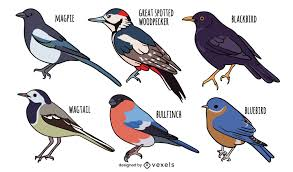
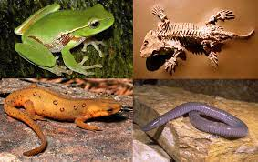
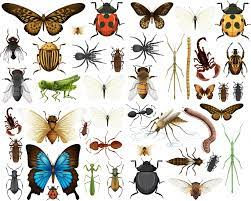
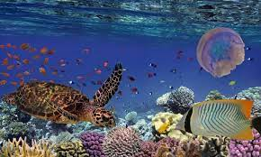

| TIPO |
DESCRIPCION |
FOTO |
| Domesticos |
Los animales domésticos son pequeños o grandes. Cuando pensamos en animales domésticos lo hacemos en perros, gatos, pero también
lo son los caballos, las gallinas, porque son Page 2 animales domesticados por el hombre. Los animales de la granja también son
considerados como domésticos. |
|
| Reptiles |
Los reptiles son animales vertebrados que se caracterizan por desplazarse reptando. Es decir, arrastrándose por el suelo, como
la serpiente, el cocodrilo, el lagarto o la tortuga. |
 |
Aves |
Las aves son animales vertebrados, de sangre caliente, que caminan, saltan o se mantienen solo sobre las extremidades posteriores,
mientras que las extremidades anteriores están modificadas como alas que, al igual que muchas otras características anatómicas únicas,
son adaptaciones para volar, aunque no todas vuelan. |
 |
| Anfibios |
Sus extremidades son patas musculosas, que les permiten nadar o saltar. La temperatura corporal es variable, es decir son animales de
sangre fría. Las crías nacen en el agua y respiran por branquias, mientras que los adultos viven en la tierra y en el agua, y respiran
por la piel y por los pulmones. |
 |
| Insectos |
Los insectos son animales invertebrados del filo de los artrópodos. Comprenden el grupo de animales más diverso de la Tierra de los
que se conocen aproximadamente un millón de especies diferentes, cada una de ellas con una cantidad de miembros muy abundante. |
 |
| Marinos |
Los animales del mar o animales marinos son aquellos que están adaptados a la vida dentro del mar, en su superficie o en sus orillas. |
 |